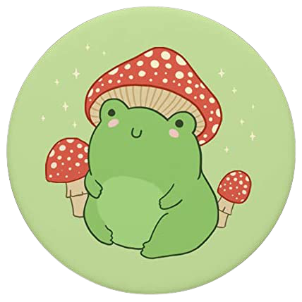
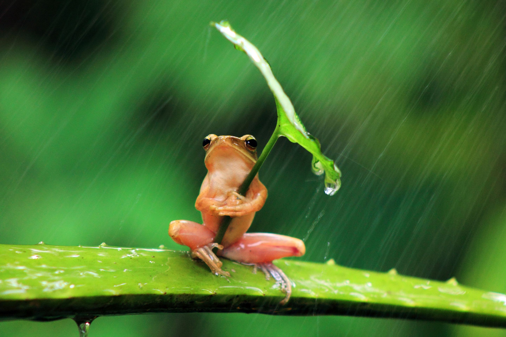
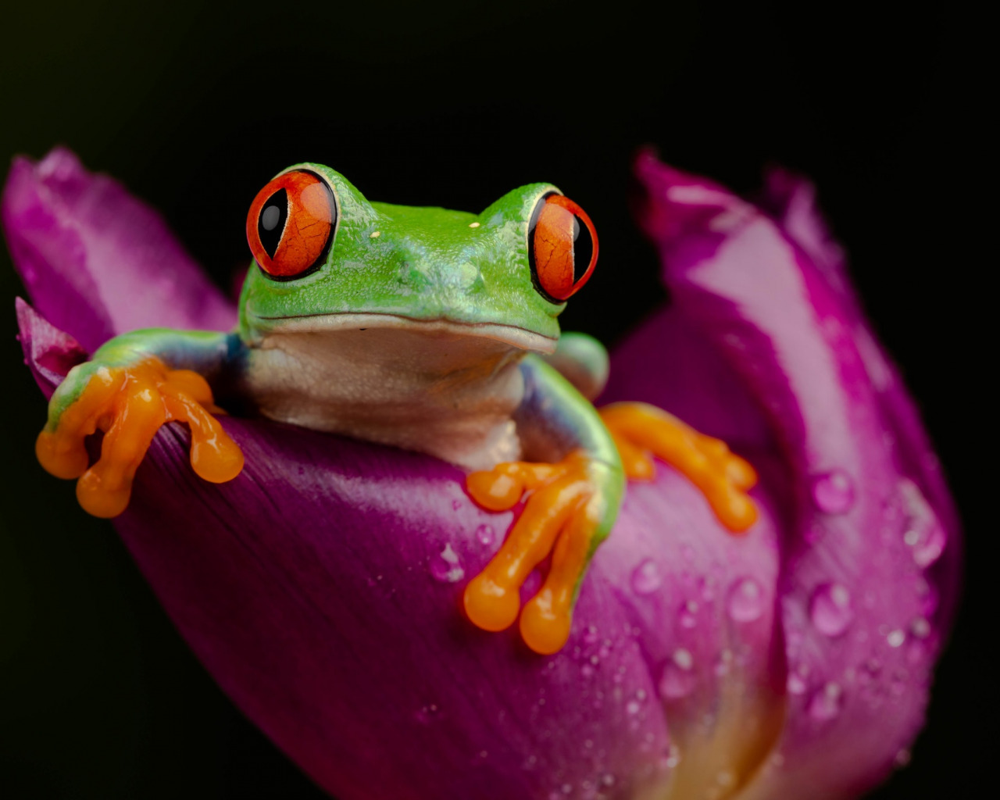
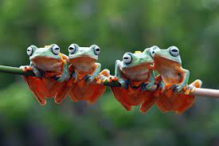
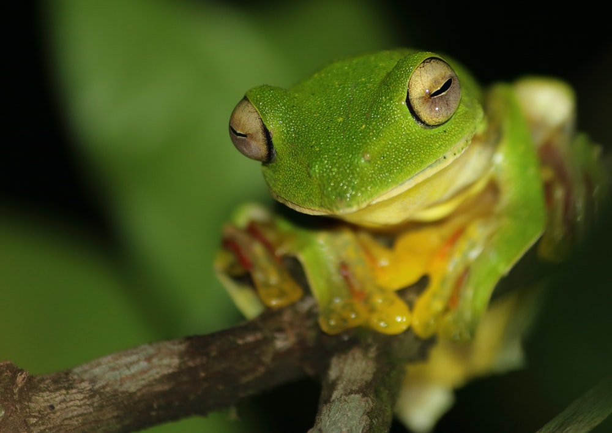

Ribbit!! Ribbit!!
This site is dedicated to show how cute and loveable frogs are, so we can diminish the common beliefs that frogs are gross and weird.

Some Fun Facts about Frogs.

Frogs drink water through their skin.

A frog’s eyes and nose are on the very top of their heads.

Frogs live around the world, on every continent, except Antarctica.

A frog can’t keep its eyes open when eating
Frogs are underated. People describe them as the definition of ugly and gross.
I honestly think they are cute. It's the little eyes that get me. They are not gross.
Like, how are the gross? What, is it that they are slimy? Axolotls are slimy but are cute.
Or that they eat bugs? Birds and lizards eat bugs, but are concidered cute.
They also control harmful insect population. So why do people call them ugly?
Join The Frog lovers community!!
Join our community by clicking that button right over there!